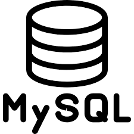

Je m'appel Augustin Diabira, je suis actuellement en deuxiéme année de BTS SIO option SLAM.
Scolarité
Diplômé d'un bac ES en 2020, j'ai décidé de poursuivre mes études en déloppement web, le bts sio m'a semblé être le meilleur choix pour me former.
Projet professionnel
Actuellement dans le développement web, je souhaite me spécialiser dans le développement mobile iOS, extrêment intéressé par
le langage swift et son framework SwiftUI, je me suis formé en ligne et me suis passionné du développement mobile.
Aprés mon bts, j'ai décidé de poursuivre ma scolarité à l'ESGI afin de poursuivre ma scolarité dans le développement mobile.
Qu'est ce que le BTS SIO ?
Le Brevet de Technicien Supérieur aux Services Informatiques aux Organisations (BTS SIO), s'adresse à ceux qui souhaitent se former en deux ans aux métiers d'administrateur réseau ou de développeur. Pour par la suite intégré directement le marché du travail ou continuer des études, dans le domaine de l'informatique.
Le BTS SIO propose deux spécialités :
Le BTS SIO (services informatiques aux organisations) dispense deux options : une option A : "solutions d’infrastructure, systèmes et réseaux" (dite SISR), et une option B : "solutions logicielles et applications métiers" (connue aussi sous l’acronyme SLAM).
• Avec l’option SISR, la personne titulaire contribue à la production et à la fourniture de services en réalisant ou en adaptant des solutions d’infrastructure et en assurant le fonctionnement optimal des équipements et des services informatiques.
• Avec l’option SLAM, le diplômé participe à la production et à la fourniture de services en développant, en adaptant ou en maintenant des solutions applicatives.
Formation
Mon parcours
2020
Obtention Bac ES option Maths
Baccalauréat ES option Maths
2020-2021
BTS SIO CFA INSTA
Première année de BTS SIO
2021-2022
2éme année BTS SIO
Objectif: Obtenir mon diplôme.
2022-2023
Licence Mobilité et objets connectés.
Objectif: Obtenir ma licence et me spécialiser dans le développement mobile iOS
2023
Alternance dans le développement mobile
En cours.
Compétences
HTML5
CSS3
JavaScript
PHP
Swift

MySQL
Java
Réalisations
Au cours de ma préparation au BTS SIO option SLAM, j'ai réalisé plusieurs projets lors de stages en entreprise ou d'ateliers professionnels encadrés par l'équipe pédagogique de mon centre de formation. Ces réalisations en contexte professionnel ou pédagogique m'ont permis d'acquérir les blocs de compétences du réferentiel du BTS SIO.
Création, publication de newsletter en utiliSendinblue, amélioration d’une campagne Facebook
Élaboration de la documentation, cahier des charges, ainsi que de fiches veilles.
Choisir un hébergeur pour le futur site de l'Association.
Missions
Conception et développement d'un nouveau site web
CMS WordPress
Utilisation d'extensions sur le cms
Projets Personnels
Activités effectuées
Réalisation d'un jeu de cartes simple en swift.
Réalisation de la documentation technique, commentaire dans le code pour la lisibilité et la maintenabilité
Activités effectuées
Réalisation d'une Calculatrice en Swift.
Réalisation de la documentation technique, commentaire dans le code pour la lisibilité et la maintenabilité
Activité réalisée
Réalisation d'un clone du réseau social Twitter à l'aide du langage Swift et framework SwiftUI.
Activité réalisée
Projet scolaire et initiation à Swing (Java)
Activité réalisée
Site web d'OpticManager.
Activité réalisée
Logiciel Java, Gestions de matériels optique.
Veille technologique
La veille technologique consiste à se tenir informé des évolutions techniques et des innovations dans un secteur d’activité donné. Cela comprend notamment la surveillance, la collecte, le partage et la diffusion d’information permettant d’anticiper ou d'avoir connaissance des changements en matière de recherche, développement, brevet, lancement de nouveaux produits, matériaux, processus, concepts, innovation de fabrication, etc….
Le théme de ma veille sera la réalité augmentée.
Qu'est ce que la réalité augmentée ?
La réalité augmentée est la superposition de la réalité et d'éléments (sons, images 2D, 3D, vidéos, etc.) calculés par un système informatique en temps réel. Elle désigne souvent les différentes méthodes qui permettent d'incruster de façon réaliste des objets virtuels dans une séquence d'images. Elle s'applique aussi bien à la perception visuelle (superposition d'images virtuelles aux images réelles) qu'aux perceptions proprioceptives comme les perceptions tactiles ou auditives. Ces applications sont multiples et touchent de plus en plus de domaines, tels que les jeux vidéo, l'éducation par le jeu, les chasses au trésor virtuelles, le cinéma et la télévision (post-production, studios virtuels, retransmissions sportives…), les industries (conception, design, maintenance, assemblage, pilotage, robotique et télérobotique, implantation, étude d'impact, etc.) ou le champ médical.
Comment l'appliquer dans la programmation ?
On peut appliquer la réalité augmentéé dans le code de plusieurs maniéres:
1- iOS Arkit
ARKit est le Framework AR créé par Apple. Développé en Objective-C et intégré aux systèmes iOS et iPadOS. La première version d’ARKit a subi plusieurs modifications au fil du temps. Dans sa première version, tout était basé sur la détection de surfaces horizontales telles que des tables ou des sols, où l’accumulation de points de ces fonctions dans telles zones permettait à peu près la détection de telles surfaces. ARKit 1.5 incorporait déjà des images de référence et la détection des surfaces verticales. Plus tard, ARKit 2.0 a introduit des améliorations générales concernant les performances et a également ajouté des expériences partagées. La version ARKit 3.0 intégrait l’occlusion des personnes afin que les objets virtuels situés derrière les personnes ne chevauchent pas les personnes devant eux.
C’est une bonne option pour les créateurs de jeux vidéo puisque cette bibliothèque prend en charge à la fois la native Apple pour les graphiques 3D SceneKit et API native de niveau inférieur Metal. Il est également compatible avec les bibliothèques tierces telles que celles d’Unreal Engine ou Unity IDE.
2- ARcore
ARCore est une plateforme conçue par Google qui bénéficie de plusieurs API qui permettent à notre smartphone de reconnaître, d’analyser et surtout d’interagir avec notre environnement. Il est capable de détecter des éléments tels que le mouvement, la taille et l’emplacement de différentes surfaces horizontales, verticales et inclinées, ainsi que d’estimer les conditions d’éclairage de l’endroit où nous nous trouvons.
Les développeurs qui souhaitent aborder le développement d’applications de réalité augmentée pour Android et d’applications iOS de réalité augmentée d’une manière beaucoup plus simple, car il prend en charge plusieurs plateformes.
3- CV simple
Le SDK de réalité augmentée open source le plus utilisé est Simple CV. Il utilise l’écran d’un appareil comme une lentille dans laquelle il entrelace plusieurs éléments du monde réel avec des éléments virtuels (comme du texte, des images, etc.). L’affichage à l’écran reflète le monde réel combiné avec des objets virtuels.
En outre, il offre trois types de fonctions visuelles : une fonction de seuil, une méthode de bord et une fonction de recherche de points-clés.
Un autre avantage est qu’il n’est lié à aucune plateforme spécifique, ce qui signifie qu’il est compatible avec Java, C ++, et même Python.
Équipes de développement d’applications de réalité augmentée à la recherche d’un outil permettant un déploiement facile d’éléments virtuels dans des images réelles obtenues via des webcams, des caméras FireWire et IP, ou des téléphones mobiles.
4- Vuforia
Vuforia, tout comme Simple CV, utilise également l’écran de l’appareil de la même manière : pour inclure des images virtuelles dans des images réelles d’une manière qu’elles semblent réelles. Il est utilisé pour reconnaître et suivre les images plates et les objets 3D simples en temps réel.
Ses fonctionnalités incluent également la possibilité d’ajouter des boutons virtuels, de créer des effets d’arrière-plan ou de gérer les occlusions, ce qui permet de trouver des objets partiellement cachés.
Très utile pour les développeurs qui souhaitent créer des applications de réalité augmentée combinant des images réelles et virtuelles.
Ce SDK est disponible gratuitement, mais il propose également des versions payantes qui permettent d’accéder à des fonctionnalités avancées.
La réalité augmentée dans le domaine médical.
La réalité augmentée apparaît comme l’une des technologies les plus prometteuses dans le secteur de la santé, en ouvrant de spectaculaires perspectives de progrès, tant pour les médecins que pour les patients.
Contrairement à la réalité virtuelle, qui consiste à créer un monde en 3D complètement détaché de la réalité de l’utilisateur, la réalité augmentée (RA) permet, elle, d’introduire des éléments digitaux virtuels dans la perception de l’environnement réel. Bien que le concept ne soit pas nouveau, les récents progrès en matière de caméra, de capteurs et de logiciels ont rendu la réalité augmentée véritablement applicable, dans des domaines aussi variés que le jeu vidéo, le marketing, la mode ou encore le tourisme. Mais c’est certainement aujourd’hui dans le secteur de la santé que son application est la plus spectaculaire, et laisse entrevoir des avancées significatives, pour les praticiens comme pour les patients.
La RA en pleine croissance dans le secteur de la santé
Les technologies dites « immersives » n’en sont qu’à leur début dans le monde de la santé. Selon une étude récente publiée par Market Research Future, leur adoption pourrait y augmenter de plus de 30% par an d’ici 2023, avec une croissance supérieure de la réalité augmentée par rapport à la réalité virtuelle.
Du diagnostic de maladies à la formation des nouveaux médecins, en passant par la visualisation chirurgicale et la simulation de traitements, les applications de la RA et de la RV dans le secteur médical sont multiples. Il n’est donc pas étonnant que les experts s’accordent à dire que ce type de technologie y est promis à un bel avenir.
Parmi les facteurs de développement de la RA dans la santé, MRF cite notamment la nécessité de réduire des coûts de santé, l’introduction croissante de l’IoT dans le secteur médical, et surtout les bénéfices de plus en plus avérés de son utilisation dans des disciplines médicales variées.
La formation est notamment l’un des champs d’application de la RA qui a d’ores et déjà largement fait ses preuves, dans le secteur médical comme ailleurs. Dans leur apprentissage de l’anatomie et des fonctions biologiques et physiologiques, les professionnels de santé en devenir trouvent dans la RA la capacité non seulement à visualiser le corps humain en 3D, mais aussi et surtout à interagir avec ces représentations virtuelles. Ce qui constitue un atout considérable dans le processus d’apprentissage et de mise en pratique des connaissances.
Mais l’utilisation de la réalité augmentée va aujourd’hui au-delà des murs des salles de classe de médecine pour investir petit à petit la réalité des salles de soin et des blocs opératoires.
Ce que la RA va changer dans la pratique chirurgicale
L’une des utilisations les plus spectaculaires de la RA se passe sans aucun doute dans le domaine de la chirurgie. Certains chirurgiens utilisent en effet aujourd’hui la RA pour visualiser en 3D une zone qu’ils ont à opérer. En étant ainsi capables de se projeter dans l’anatomie du patient, tout en ayant accès à des informations en temps réel, ils peuvent véritablement améliorer la précision de leurs gestes et de leurs actes, et réduire considérablement le risque d’erreurs médicales.